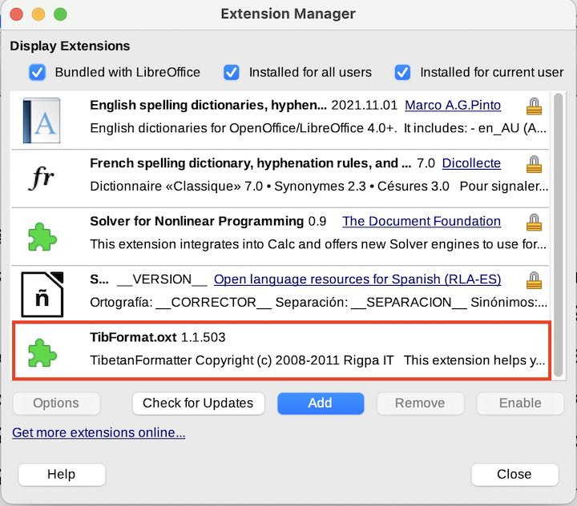

Tibetan Formatting LibreOffice Extension
Contents
Tibetan Formatting LibreOffice Extension¶
Introduction¶
The Tibetan formatting LibreOffice Extension supports two tasks for Tibetan processing in LibreOffice:
Automatic application of
rin chen spungs chad༑ insertion. Especially for longer texts this can save a lot of time when formatting texts. Seerin chen spungs shadformatting for the underlying rules.Left/Right justification through insertion of invisible elastic formatting characters.
Download and installation¶
The extension can be downloaded from the repository TibFormat.oxt
See the LibreOffice_TibetanFormatter repository for more details.
Installation¶
{kind=link}
In LibreOffice, use Tools, Extension Manager..., Add and select the downloaded TibFormat.oxt. After a restart, a new LibreOffice menu item Tibetan is available.
Uninstallation¶
To uninstall TibetanFormatter go to Tools / Extension Manager. Under My Extensions select TibetanFormatter and click Remove.
Restart LibreOffice.
Description¶
Right / left justification of Tibetan text (Mac & Linux)¶
Select a passage of Tibetan text and then select
Format / Paragraph / Alignment / Justified. Additionally tickExpand single words. Newer versions of LibreOffice fail to expand Tibetan words. A trick is to insert justification characters:
{kind=link}
Select a passage of Tibetan text and then select
Format / Paragraph / Alignment / Justified.Select
Tibetan / Insert Justification Characters. This will insert a zero-length space character after eachtsheg. Some versions of LibreOffice cannotExpand single wordsfor Tibetan, but it can expand zero-length characters.
Tip: Left/right justification, especially when using the justification character insertion by the extension, and after using the automatic rin chen spungs chad ༑ insertion, might lead to ugly spaces after tshegs ་. In many cases this effect can be reduced by slightly compressing all characters by 0,1 to 0,2 pt using the LibreOffice command Format / Character / Position / Condensed option.
Automatic insertion of rin chen spungs chad ༑ (Mac, Linux & Windows)¶
The option
Tibetan / Apply rinchen spungs shadautomatically searches the selected paragraphs forshad། characters that need to be changed intorin chen spungs chad༑. Especially for longer texts this can save a lot of time when changing and formatting texts.The function
Tibetan / Apply rinchen spungs shadalso automatically corrects illegal line breaks andshad། at beginning of lines.
Corrections of invalid line breaks¶
LibreOffice seems to incorrectly break Tibtan syllables in the middle on some platforms. Running the “Tibetan / Apply rinchen spungs shad” function fixes the incorrect line breaks.
Restrictions and known issues¶
Important: we recommend at this stage not to use the function
Tibetan / Justify & Apply Rinchen Spungs Shad, but do all formatting in two steps:Tibetan / Insert Justification Characters,Tibetan / Apply Rinchen Spungs Shad. It is currently faster and more reliable this way.
Tibetan / Insert Justification Charactersis faster if applied to the whole document.Please note that LibreOffice handles large paragraphs very badly and it slows down all operation. If you have very long texts without paragraph breaks, it is recommended to insert paragraph breaks at line ends every 10-20 pages. This will significantly speed up LibreOffice in general and the Tibetan Formatting extensions.
Credits & Acknowledgements¶
The extension was developed by Eszter Hoffmann, Rigpa IT.
Some code from Andrew Pitonyak was used. Thanks for the useful collection of guides and examples.
Thanks to the members of the OpenOffice.org Forum, with so many helpful posts.
References¶
Gihub source repository: LibreOffice_TibetanFormatter